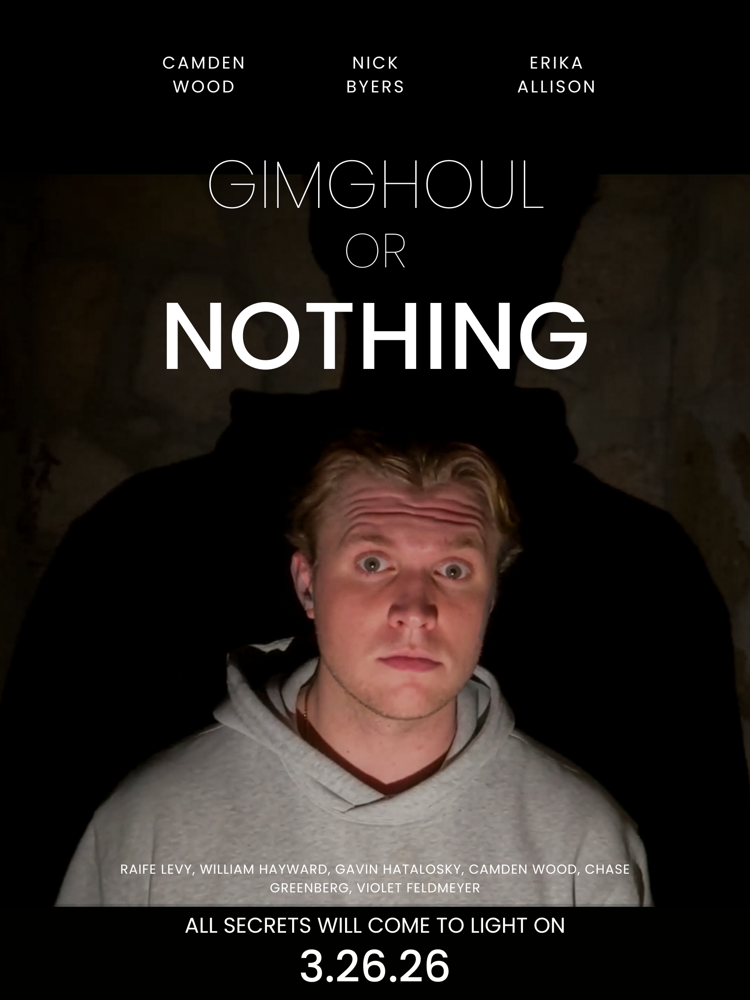
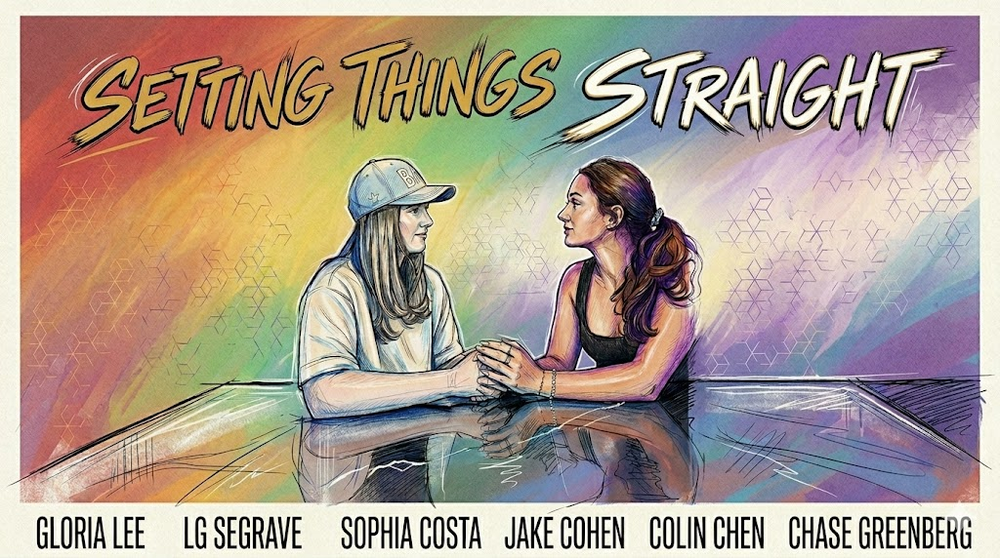
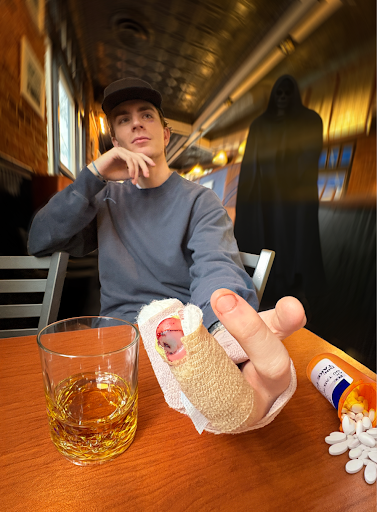

Hit Me
Visual Architect
A dying gambler plays one more hand. The rest of the table smokes cigars and drinks whiskey; he drinks water because his liver is failing. However, after being dealt a bad card, he begins to lose control.
Watch the Film →
Gimghoul or Nothing
Scriptwriter / Storyboarder
Camden is a UNC freshman who cannot find where he fits in. He finds a YouTube video about the Gimghoul, a secret society based in a castle behind campus, and decides to investigate. He teams up with Nick, the video's creator, to dig in. All the while he wrestles with love and betrayal.
Watch the Film → Watch the Trailer →
Setting Things Straight
Assistant Scriptwriter, Visual Architect
Ruth and Naomi are old friends who have drifted apart. When they reconnect, Ruth's sexuality and Naomi's faith come into conflict. The character names, outfits, and discussions of culture further develop the tension.
Watch the Film → Watch the Trailer →
Photo Essay
A man sits at a dining table with two bandaged fingers, a glass of whiskey, and a spilled bottle of pills. The grim reaper stands behind him, waiting. The photo essay begs the question: are we responsible for our choices in the face of so much beyond our control?